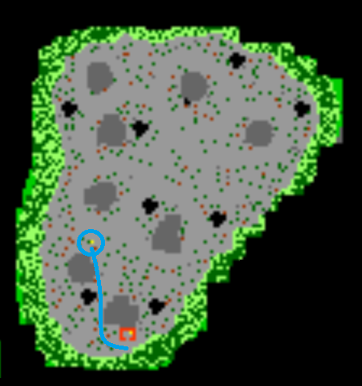
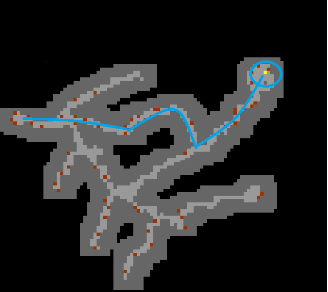

Undeads
Essa task você vai ter que matar 700 "Undeads", que pode ser "undead dragon" ou "chaos draco".
O "undead dragon" tem ❤8.350 de vida e tem defesa 🧊40 🌾90 🔥40 💀95 ⚡40 💡25 e XP de 5100.

O "chaos draco" tem ❤7.700 de vida e tem defesa 🧊40 🌾60 🔥30 💀50 ⚡50 💡40 e XP de 5500.
O XP dessa quest varia entre 3.570.000 a 3.850.000 mais 200.000 da task, Lembrando que não estou contando com bonus de xp.
O item que ganha de recompensa da task é o "Maxilla Maximus" usado para domar o "Undead Cavebear".

Para encontrar as criaturas você pode "/ir wyvern" e seguir o caminho a baixo, por enquanto só sei onde se encontra o respawn de "undead dragon" quando souber do "chaos dragon" estarei atualizando, ao decer a escada cuidado vai dar de frente com 4 deles e com 2 banshe.
  Home